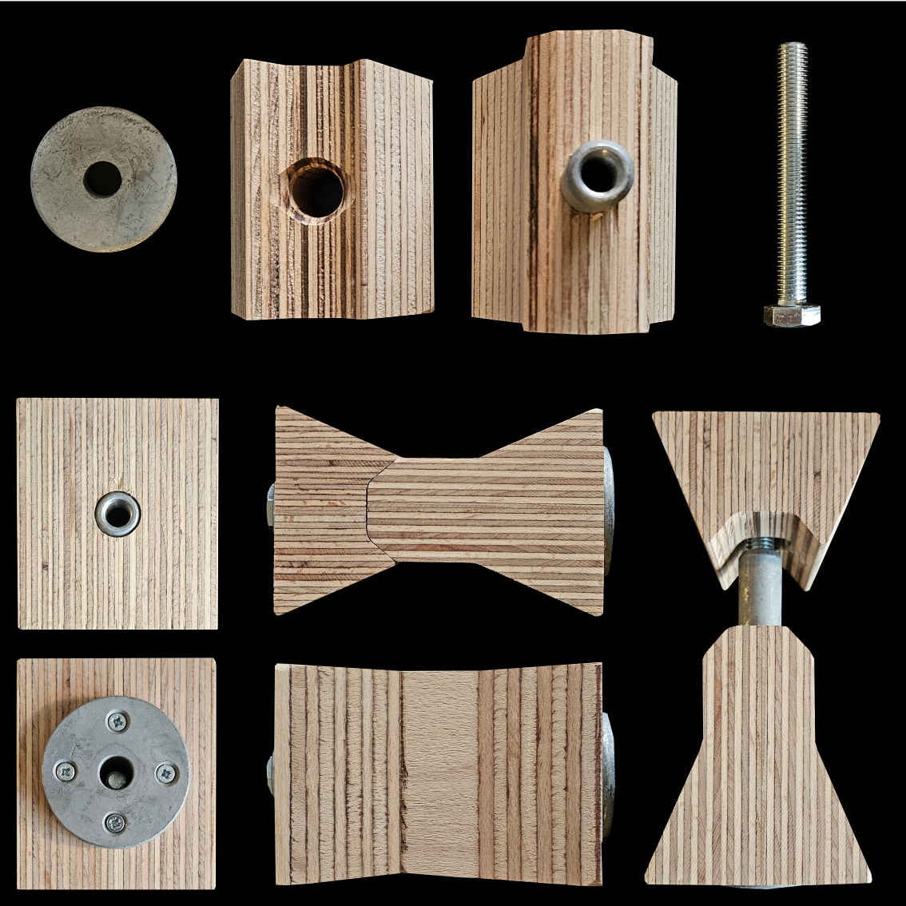
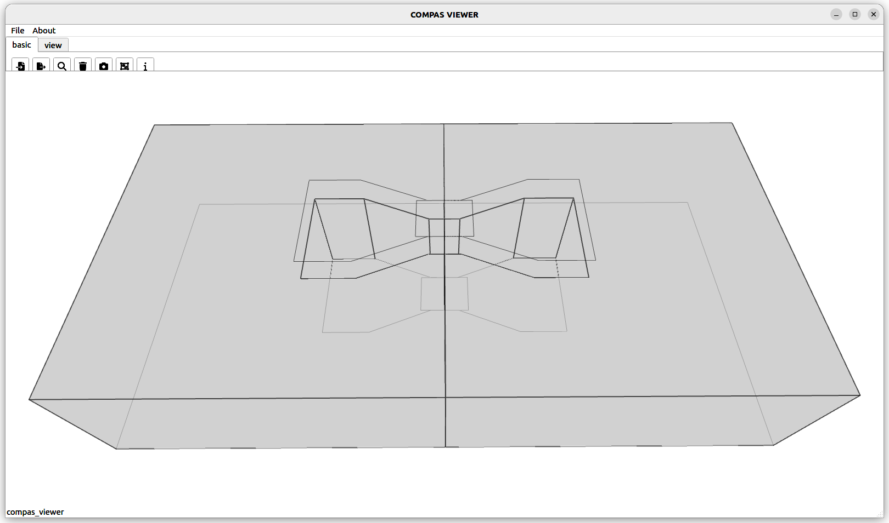
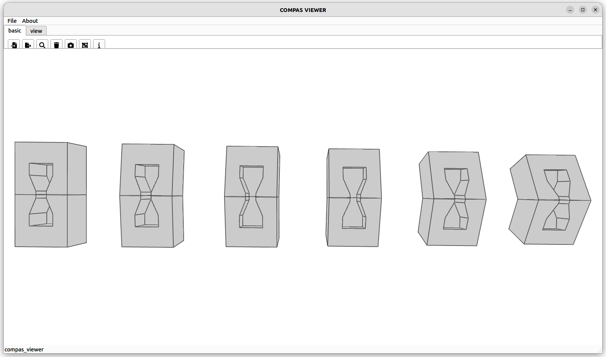
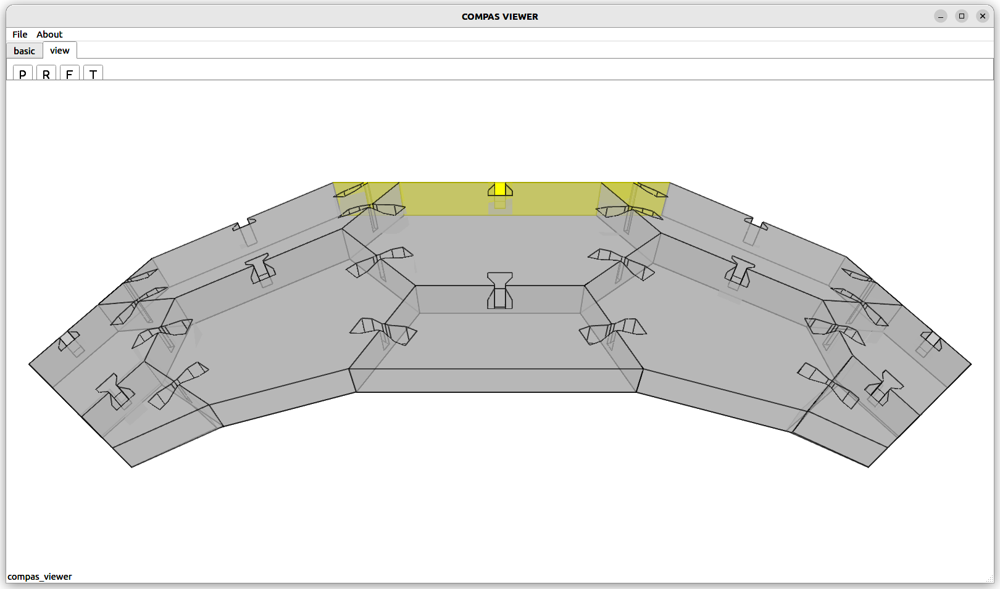
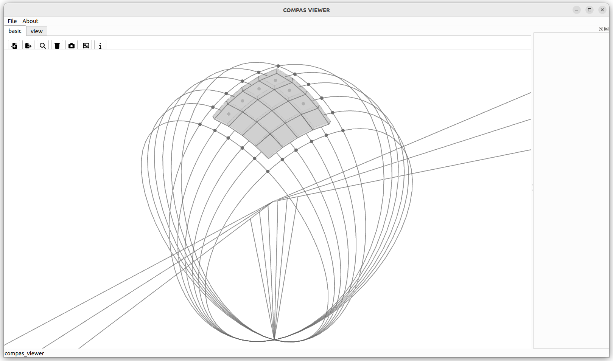
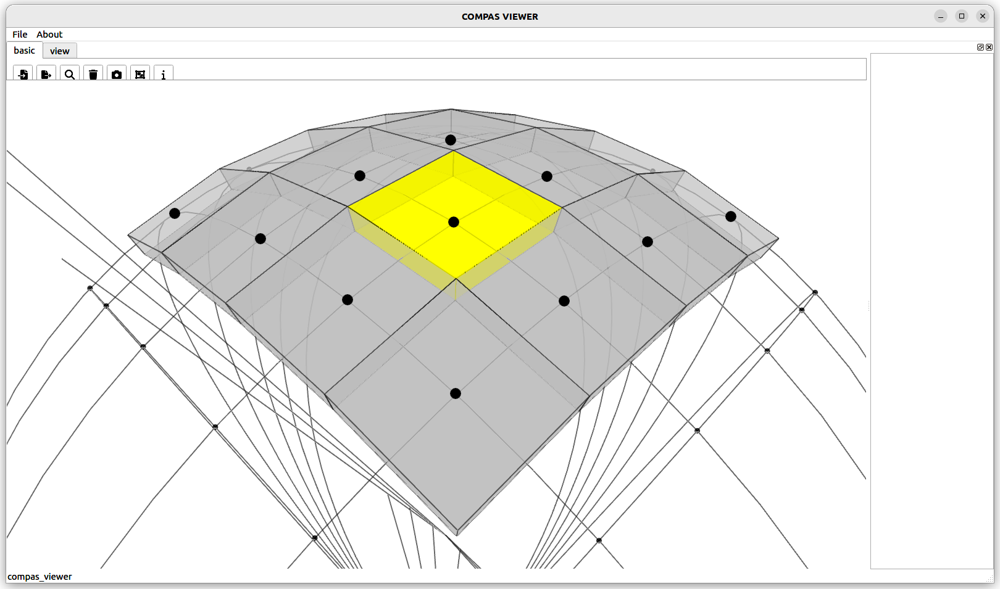
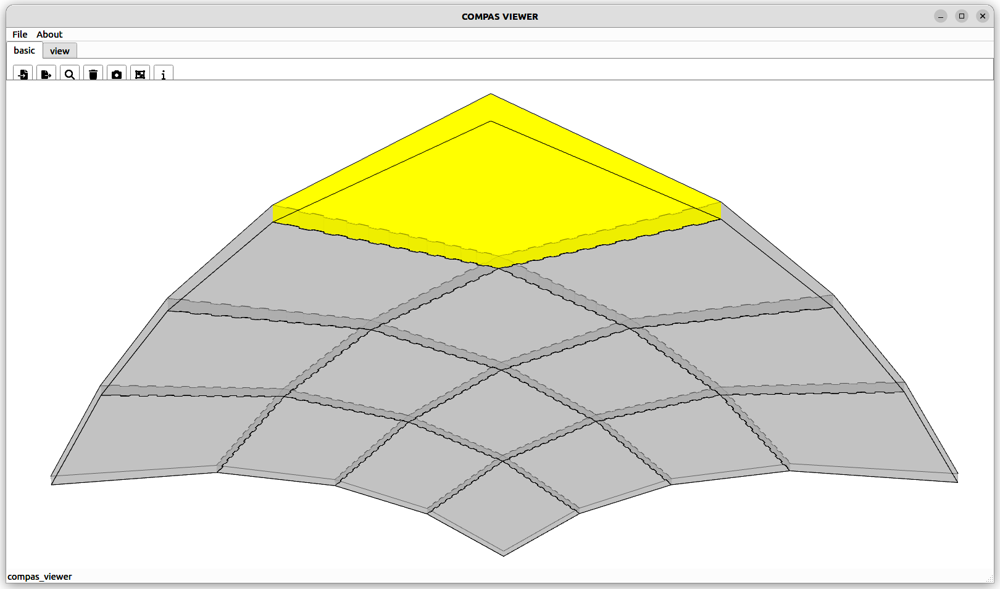
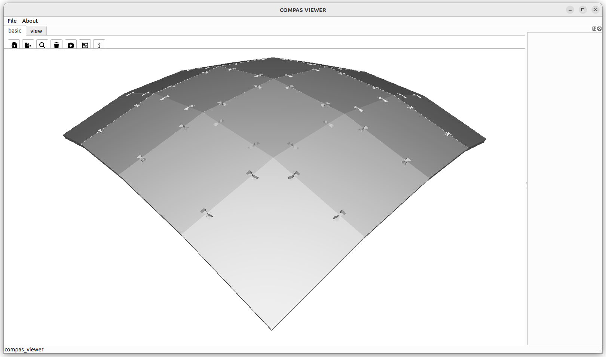

type: plates name: side-to-side edge in-plane hilti
This tutorial focuses on Hilti CLT connectors. The objective is to demonstrate how to create a model consisting of pairs of polylines that represent timber plates, detect the interfaces between these plates, and create connectors. Subsequently, the geometry is meshed, and a mesh boolean difference is applied for visualization purposes.
Scope of the tutorial:
We begin with simple pairwise connections.
Then, we apply the process to a planar hexagonal shell.
Finally, we test the process on a planar quad shell.
The connector requires a 240x90x93 mm cutout. The LVL timber element measures 128x78.5x90 mm, and the inner thin part is 27.7x40x90 mm. The angles are set at 45 degrees, and the cuts are made with a router with a diameter of up to 40 mm. The minimum distance between two connectors is 300 mm, and the maximum is 3000 mm; the minimum distance to a corner is 300 mm, and the minimum CLT thickness is 120 mm. It can withstand tensile forces of up to 35 kN and shear forces of up to 40 kN.

Single pair:
from compas.geometry import Polyline
from compas_wood.binding import get_connection_zones
from compas_wood.binding import mesh_boolean_difference_from_polylines
from compas_wood.binding import globals
# Create two polylines.
polyline00 = Polyline([[0, 150, 0], [-300, 150, 0], [-300, -150, 0], [0, -150, 0], [0, 150, 0]])
polyline01 = Polyline([[0, 150, 120], [-300, 150, 120], [-300, -150, 120], [0, -150, 120], [0, 150, 120]])
polyline10 = Polyline([[0,150,0], [0, -150, 0], [300, -150, 0], [300, 150, 0], [0, 150, 0]])
polyline11 = Polyline([[0,150,120], [0, -150, 120], [300, -150, 120], [300, 150, 120], [0, 150, 120]])
polylines = [polyline00, polyline01, polyline10, polyline11]
# Create joints.
globals.face_to_face_side_to_side_joints_rotated_joint_as_average = True
globals.face_to_face_side_to_side_joints_all_treated_as_rotated = True
polylines_lists, output_types = get_connection_zones(
input_polyline_pairs=polylines,
input_joint_parameters_and_types=[500, 1.0, 55],
input_output_type=5)
# Create meshes.
Vizualize…
meshes = mesh_boolean_difference_from_polylines(polylines_lists)
# Vizualize.
import sys
if sys.version_info >= (3, 9):
from compas_viewer import Viewer
from compas.geometry import Scale
viewer = Viewer(show_grid=False, rendermode='ghosted')
scale = 1e-2
for polylines in polylines_lists:
for polyline in polylines:
polyline.transform(Scale.from_factors([scale, scale, scale]))
viewer.scene.add(polyline, show_points=False)
for mesh in meshes:
mesh.transform(Scale.from_factors([scale, scale, scale]))
viewer.scene.add(mesh, show_points=False, hide_coplanaredges=True, lineswidth=2, linecolor=(0, 0, 0))
viewer.show()

Multiple pairs in varying angles:
from compas.geometry import Polyline
from compas_wood.binding import get_connection_zones
from compas_wood.binding import mesh_boolean_difference_from_polylines
from compas_wood.binding import read_xml_polylines
from compas_wood.binding import globals
# Read polylines from an exrernal file, in this case compas_wood xml dataset.
xml_polylines = read_xml_polylines(
foldername="/home/petras/brg/2_code/wood_nano/src/wood/cmake/src/wood/dataset/",
filename='type_plates_name_side_to_side_edge_inplane_hilti',
scale=1e0
)
# Create joints.
globals.face_to_face_side_to_side_joints_rotated_joint_as_average = True
globals.face_to_face_side_to_side_joints_all_treated_as_rotated = True
polylines_lists, output_types = get_connection_zones(
input_polyline_pairs=xml_polylines,
input_joint_parameters_and_types=[5000, 1.0, 55],
input_output_type=5)
Vizualize…
# Create meshes.
meshes = mesh_boolean_difference_from_polylines(polylines_lists)
# Vizualize.
import sys
if sys.version_info >= (3, 9):
from compas_viewer import Viewer
from compas.geometry import Scale
viewer = Viewer(show_grid=False, rendermode='ghosted')
scale = 1e-2
# for polylines in polylines_lists:
# for polyline in polylines:
# polyline.transform(Scale.from_factors([scale, scale, scale]))
# viewer.scene.add(polyline, show_points=False, line_width=2, linecolor=(255, 0, 100))
for mesh in meshes:
mesh.transform(Scale.from_factors([scale, scale, scale]))
viewer.scene.add(mesh, show_points=False, hide_coplanaredges=True, lineswidth=2, linecolor=(0, 0, 0))
viewer.show()

Heaxagonel shell:
from compas.geometry import Polyline
from compas_wood.binding import get_connection_zones
from compas_wood.binding import mesh_boolean_difference_from_polylines
from compas_wood.binding import read_xml_polylines
from compas_wood.binding import globals
# Read polylines from an exrernal file, in this case compas_wood xml dataset.
xml_polylines = read_xml_polylines(
foldername="/home/petras/brg/2_code/wood_nano/src/wood/cmake/src/wood/dataset/",
filename='type_plates_name_side_to_side_edge_inplane_hexshell',
scale=0.25e1
)
xml_polylines.reverse()
# Create joints.
globals.face_to_face_side_to_side_joints_rotated_joint_as_average = True
globals.face_to_face_side_to_side_joints_all_treated_as_rotated = True
polylines_lists, output_types = get_connection_zones(
input_polyline_pairs=xml_polylines,
input_joint_parameters_and_types=[500, 1.0, 55],
input_output_type=5)
# Remove duplicate polylines - bug in the code.
new_polyline_lists = []
for polylines in polylines_lists:
new_polylines = []
for polyline in polylines:
if polyline not in new_polylines:
Vizualize…
new_polylines.append(polyline)
new_polyline_lists.append(new_polylines)
polylines_lists = new_polyline_lists
# Create meshes.
meshes = mesh_boolean_difference_from_polylines(polylines_lists)
# Vizualize.
import sys
if sys.version_info >= (3, 9):
from compas_viewer import Viewer
from compas.geometry import Scale
viewer = Viewer(show_grid=False, rendermode='ghosted')
scale = 1e-2
# for polylines in polylines_lists:
# for polyline in polylines:
# polyline.transform(Scale.from_factors([scale, scale, scale]))
# viewer.scene.add(polyline, show_points=False, line_width=2, linecolor=(255, 0, 100))
# print(meshes[0])
for i, mesh in enumerate(meshes):
mesh.transform(Scale.from_factors([scale, scale, scale]))
viewer.scene.add(mesh, show_points=False, hide_coplanaredges=True, lineswidth=2, linecolor=(0, 0, 0))
viewer.show()

Planarized quad shell:
from compas.geometry import Polyline
from compas_wood.binding import get_connection_zones
from compas_wood.binding import mesh_boolean_difference_from_polylines
from compas_wood.binding import read_xml_polylines
from compas.datastructures import Mesh
from compas_wood.binding import globals
# Hard code mesh.
vertices = [
[1978.5396270848985, 112.18997185154055, 577.3224456715213],
[0.0, 0.0, 0.0],
[-112.18997185154105, -1978.5396270848892, 577.3224456715292],
[1920.162503885306, -1920.1625038852967, 1187.7604905134772],
[3999.999999999999, 146.9968976249949, 756.473945159439],
[3999.999999999999, -1902.0308010453325, 1377.3914296049913],
[6021.4603729151, 112.18997185154055, 577.3224456715213],
[6079.837496114693, -1920.1625038852965, 1187.7604905134772],
[7999.999999999998, 0.0, 0.0],
[8112.18997185154, -1978.5396270848892, 577.3224456715253],
[-146.9968976249954, -4000.000000000001, 756.473945159439],
[1902.0308010453416, -4000.000000000001, 1377.3914296049952],
[3999.9999999999986, -4000.000000000001, 1570.3422579488933],
[6097.9691989546545, -4000.000000000001, 1377.3914296049952],
[8146.996897624993, -4000.000000000001, 756.473945159439],
[-112.18997185154203, -6021.460372915113, 577.3224456715213],
[1920.1625038853044, -6079.8374961147065, 1187.7604905134772],
[3999.999999999998, -6097.96919895467, 1377.3914296049913],
[6079.837496114693, -6079.8374961147065, 1187.7604905134772],
[8112.18997185154, -6021.460372915113, 577.3224456715253],
[-1.9675624286558107e-12, -8000.000000000001, -3.935124857311621e-12],
[1978.539627084896, -8112.1899718515415, 577.3224456715253],
[3999.999999999998, -8146.9968976249975, 756.473945159439],
[6021.4603729151, -8112.1899718515415, 577.3224456715213],
[7999.999999999998, -8000.000000000002, 0.0]]
faces = [[0, 1, 2, 3],
[4, 0, 3, 5],
[6, 4, 5, 7],
[8, 6, 7, 9],
[3, 2, 10, 11],
[5, 3, 11, 12],
[7, 5, 12, 13],
[9, 7, 13, 14],
[11, 10, 15, 16],
[12, 11, 16, 17],
[13, 12, 17, 18],
[14, 13, 18, 19],
[16, 15, 20, 21],
[17, 16, 21, 22],
[18, 17, 22, 23],
[19, 18, 23, 24]]
mesh1 = Mesh.from_vertices_and_faces(vertices, faces)
scale = 1
mesh1.scale(scale)
mesh2 = mesh1.copy().offset(120*scale)
polygons0 = mesh1.to_polygons()
polygons1 = mesh2.to_polygons()
# conert polygons to polylines
input_polylines = []
for polygon0, polygon1 in zip(polygons0, polygons1):
input_polylines.append(Polyline(polygon0))
input_polylines[-1].points.append(input_polylines[-1].points[0])
input_polylines.append(Polyline(polygon1))
input_polylines[-1].points.append(input_polylines[-1].points[0])
# Create joints.
globals.distance_squared = 10
polylines_lists, output_types = get_connection_zones(
input_polyline_pairs=input_polylines,
input_joint_parameters_and_types=[100, 0.4, 1],
# input_joint_parameters_and_types=[15, 0.4, 3],
input_output_type=4,
# input_scale=[1, 1.0, 1],
input_scale=[0.2, 1.0, 1])
# Remove duplicate polylines - bug in the code.
new_polyline_lists = []
for polylines in polylines_lists:
new_polylines = []
for polyline in polylines:
if polyline not in new_polylines:
new_polylines.append(polyline)
new_polyline_lists.append(new_polylines)
polylines_lists = new_polyline_lists
# Create meshes.
# meshes = mesh_boolean_difference_from_polylines(polylines_lists)
# Vizualize.
import sys
if sys.version_info >= (3, 9):
from compas_viewer import Viewer
from compas.geometry import Scale
viewer = Viewer(show_grid=False, rendermode='ghosted')
scale = 1e-3
# for polyline in input_polylines:
# polyline.transform(Scale.from_factors([scale, scale, scale]))
# viewer.scene.add(polyline, show_points=False)
for polylines in polylines_lists:
for polyline in polylines:
polyline.transform(Scale.from_factors([scale, scale, scale]))
viewer.scene.add(polyline, show_points=False, line_width=2, linecolor=(0, 0, 0))
# for mesh in meshes:
# mesh.transform(Scale.from_factors([scale, scale, scale]))
# viewer.scene.add(mesh, show_points=False, show_lines=False)
viewer.show()
Mesh dual of a cone and a sphere intersection:


Rescale the mesh to 8000 mm and apply joinery:

